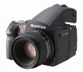

器材库 > 大中画幅可换镜头数码相机 > 645DF

规格总览
产品类型
大中画幅可换镜头数码相机
发布日期
2009-10-23
厂家推荐价格
5,990.00 （美元）
影像规格
影像传感器
CCD
镜头和对焦
镜头卡口
Mamiya 645 AF
兼容镜头
Mamiya 645 AF卡口镜头，兼容M645卡口镜头
对焦系统类型
TTL相位差检测自动对焦系统
对焦模式
AF，MF
AF辅助灯/光
有
手动对焦
支持
曝光控制
测光系统
TTL测光
测光模式
中央重点测光, 点测光
测光范围
2EV~19EV
快门类型
电子控制焦平面快门
快门速度
30 - 1/4000秒，X，B；闪光同步速度：1/125秒（焦平面），1/800或1/1600秒（叶片式快门）
曝光补偿
±5EV
自动曝光锁
有
自动包围曝光
3、5、7幅，以1/3、1/2、2/3或1EV步长调整
闪光灯
外接闪光灯
Metz SCA3002
取景器/显示屏
取景器
固定式棱镜取景器
取景范围
94%
取景放大倍率
0.71倍
屈光度调节范围
-2.5 ~ +0.5
取景器信息
对焦/离焦标记，警告信息，光圈值，快门速度，测光模式，曝光补偿值，闪光灯就绪
景深预视
有
电源
电池
6枚AA电池（碱性电池、锂电池、镍氢或镍镉充电电池）
机身规格
颜色
黑色
尺寸
153×128×152mm
重量
1030g
其它
用户自选功能
19种
配件端口
遥控线, 快门线
游走城中2013-03-13 17:514.13 分
操作性 3.50功能性 3.50美观性 4.00趣味性 4.00耐用性 4.00性价比 4.50解像力 4.50色彩还原 5.00
产品图 / 样片
玛米亚 645DF
评测 / 相关文章
- 详细内容 （存档）
- ［资讯］玛米亚645DF及数码后背移交飞思销售 （存档）
- ［行情］玛米亚645DF+数码后背配套发售 （存档）
- ［影像］中画幅 飞思645DF测试样片欣赏 （存档）
- ［资讯］飞思发布645DF （存档）
- ［资讯］飞思入股玛米亚数码影像公司 （存档）
- ［资讯］PIE2009玛米亚参展产品 （存档）
相关文章
- ［资讯］玛米亚645DF及数码后背移交飞思销售 （存档）
- ［行情］玛米亚645DF+数码后背配套发售 （存档）
- ［影像］中画幅 飞思645DF测试样片欣赏 （存档）
- ［资讯］玛米亚645DF中画幅相机即将发售 （存档）
- ［资讯］飞思发布645DF （存档）
- ［资讯］飞思入股玛米亚数码影像公司 （存档）
- ［资讯］PIE2009玛米亚参展产品 （存档）